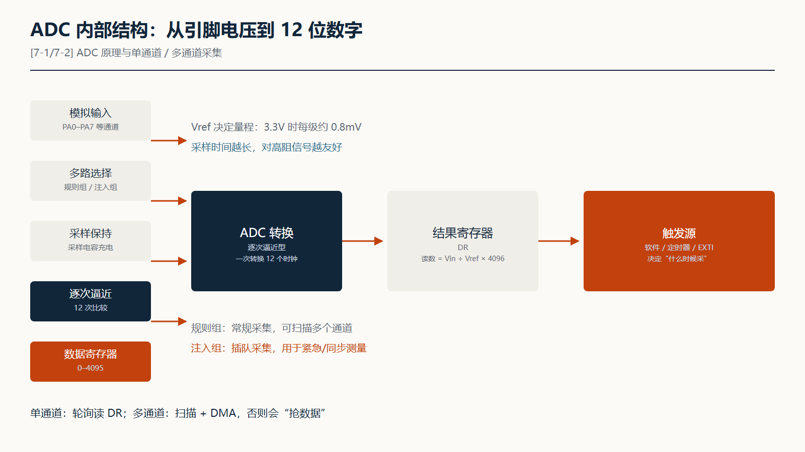

课程时长：约 70 分钟（两节） | 深度版 | 配套结构图与看图理解
7-1 讲原理：ADC 怎么把连续电压切成 4096 份；7-2 是实战：单通道轮询、多通道扫描 + DMA。
这是“把模拟世界读进芯片”的唯一通道。传感器分压、电流采样、电池电压检测，最终都落到这里。
说清 12 位 ADC 的量化过程与换算公式
解释采样时间为什么影响精度
配置单通道与多通道采集
知道什么时候必须上 DMA

图 14 ADC 内部结构：模拟输入 → 多路选择 → 采样保持 → 逐次逼近 → 数据寄存器
左侧是信号通路：引脚电压经多路选择进入采样保持电容，再由逐次逼近电路比较 12 次，结果写进数据寄存器。
图里两个关键提示：Vref 决定量程（3.3V 时每级约 0.8mV），采样时间决定电容能不能充到真实电压。很多“读数偏低”的问题，根源在后者。
STM32F103 的 ADC 是 12 位逐次逼近型，最多 18 个通道，支持规则组（常规扫描）与注入组（插队采集），可由软件、定时器或外部信号触发。
转换结果放在 DR 寄存器，12 位右对齐或左对齐可选；多通道时每次转换完要读走，否则会被下一次覆盖。
| 概念 | 含义 | 注意 |
|---|---|---|
| 分辨率 | 12 位 = 4096 级 | LSB ≈ Vref/4096 |
| 规则组 | 常规扫描序列 | 可多个通道轮流 |
| 注入组 | 插队采集 | 最多 4 通道 |
| 触发源 | 软件/定时器/EXTI | 定时器触发最稳 |
读数 = Vin ÷ Vref × 4096；反推电压 = 读数 × Vref ÷ 4096。3.3V 参考下，1 个 LSB ≈ 0.806mV。
12 位是“分辨率”不是“精度”：参考电压误差、噪声、采样时间不足都会让有效位数下降，实际可能只有 10 位。
uint16_t raw = ADC_GetConversionValue(ADC1); float volt = raw * 3.3f / 4096.0f; /* 12 位 */
采样阶段，内部电容要在规定时间内充到输入电压。信号源内阻越大，充电越慢，采样时间不够就会读偏低。
经验：源阻抗几十 kΩ 时，采样时间至少几十个周期；上百 kΩ 就要加运放缓冲。
| 源阻抗 | 建议采样时间 | 现象 |
|---|---|---|
| < 10kΩ | 1.5–7.5 周期 | 正常 |
| 10–50kΩ | 55.5 周期 | 偏短会跳 |
| > 100kΩ | 239.5 周期或加缓冲 | 明显偏低 |
单通道：软件触发，轮询 EOC 标志，读 DR。简单，适合慢变量。
多通道：规则组扫描，每转换完一个就 DMA 搬走；否则通道之间会“抢”同一个 DR，数据错位。
/* 单通道轮询 */ ADC_RegularChannelConfig(ADC1, ADC_Channel_0, 1, ADC_SampleTime_55Cycles5); ADC_SoftwareStartConvCmd(ADC1, ENABLE); while (!ADC_GetFlagStatus(ADC1, ADC_FLAG_EOC)); uint16_t v = ADC_GetConversionValue(ADC1);
ADC_InitTypeDef a; a.ADC_Mode = ADC_Mode_Independent; a.ADC_ScanConvMode = ENABLE; /* 扫描 */ a.ADC_ContinuousConvMode = ENABLE; /* 连续 */ a.ADC_NbrOfChannel = 2; ADC_Init(ADC1, &a); ADC_RegularChannelConfig(ADC1, ADC_Channel_0, 1, ADC_SampleTime_55Cycles5); ADC_RegularChannelConfig(ADC1, ADC_Channel_1, 2, ADC_SampleTime_55Cycles5); ADC_DMACmd(ADC1, ENABLE); ADC_Cmd(ADC1, ENABLE);
滑动平均：平滑但滞后，适合温度、光照
中值滤波：专治偶发尖刺
一阶低通：y += α(x−y)，α 越小越平滑
上电做一次偏移校准，减少零点误差
为什么需要采样保持：逐次逼近要比较 12 次，期间输入电压若变化，比较结果就乱。采样电容把电压“冻住”，保证 12 次比较针对同一个值。
为什么多通道不用 DMA 会串数据：所有通道共用一个 DR，转换完一个通道若不及时读走，下一个通道的结果会覆盖它。DMA 的作用就是“每次转换完立刻搬走”。
例 1：3.3V 参考、读数 2048 → 电压 = 2048×3.3/4096 = 1.65V。
例 2：读数 1 个 LSB 对应 3.3/4096 ≈ 0.806mV；要测 1mV 的变化，至少要有 2 个 LSB 的余量。
例 3：采样 55.5 周期、ADC 时钟 12MHz → 单次采样约 4.6µs，加上转换 12.5 周期，整体约 5.6µs，最高约 180ksps。
| 错误写法 | 后果 | 正确做法 |
|---|---|---|
| 引脚配成上拉输入 | 分压比被改变，读数偏大 | 改 GPIO_Mode_AIN |
| 多通道不配 DMA | 通道数据错位 | 开扫描 + DMA |
| 采样时间设最短 | 高阻信号读偏低 | 加长采样时间 |
| 参考电压不稳 | 整体漂移 | 用外部基准或稳压 |
分辨率与精度的区别：分辨率是“能分出多少格”，精度是“每格准不准”。12 位 ADC 若参考电压有 1% 误差，绝对精度就只有约 33mV。
为什么要做过采样：对同一信号快速采样 N 次求平均，可把噪声摊薄，等效提高 1–2 位有效分辨率，代价是速度。
用电位器分压，转动时看读数是否线性变化
万用表量同一点电压，与换算结果对比
多通道采集时确认两个缓冲区数据不串
| 现象 | 原因 | 解决 |
|---|---|---|
| 读数一直是 4095 | 输入超过 Vref | 分压或降幅 |
| 读数乱跳 | 采样时间不足/地噪声 | 加长采样、加滤波 |
| 多通道错位 | 没开 DMA | 扫描 + DMA |
| 整体偏小 | 源阻抗太大 | 加运放缓冲 |
Q1. 12 位 ADC 有多少级？
A：4096。
Q2. 电压怎么换算？
A：读数 × Vref ÷ 4096。
Q3. 采样时间为什么重要？
A：决定采样电容能否充到真实电压。
Q4. 规则组与注入组的区别？
A：常规扫描 vs 插队采集。
Q5. 多通道为什么要 DMA？
A：避免共用 DR 导致数据覆盖。
Q6. 分辨率等于精度吗？
A：不等于，精度还受参考源与噪声影响。
Q7. 如何提高有效精度？
A：过采样平均、加滤波、稳定基准。
Q8. ADC 时钟有上限吗？
A：有，F103 通常不超过 14MHz。
1. 读数 1024、Vref 3.3V，电压？
答：约 0.825V。
2. 1 个 LSB 约多少 mV？
答：0.806mV。
3. 多通道必须配什么？
答：DMA。
4. 读数偏低常见原因？
答：采样时间不足或源阻抗大。
☐ 会换算电压
☐ 懂采样时间
☐ 能配单/多通道
☐ 知道何时上 DMA